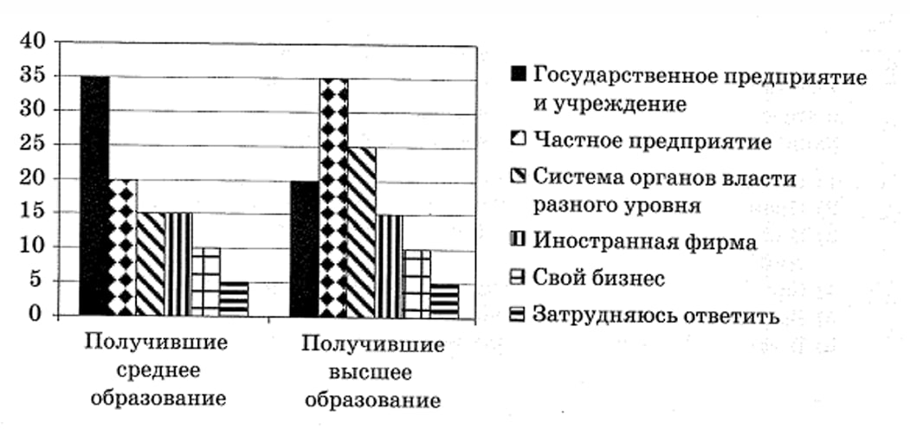
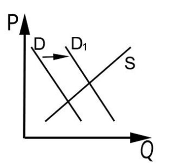
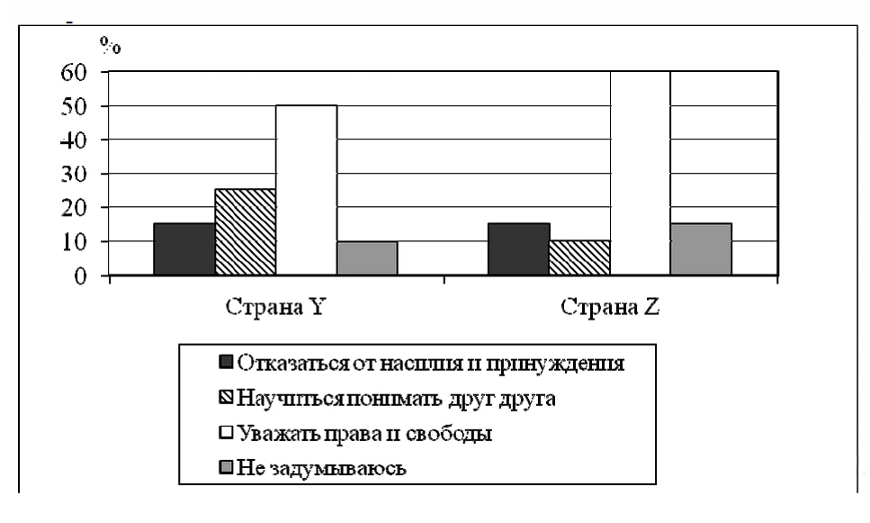
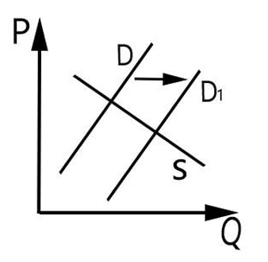

🎯 Цель: Отработать навыки решения заданий ЕГЭ на двух полноценных вариантах. Проверьте себя по ключам в конце каждого варианта.
Вариант 3 - Тренировочный ЕГЭ
Часть 1
Ответами к заданиям 1–16 является последовательность цифр. Введите ответ в поле и нажмите "Проверить".
1. Ниже приведён ряд признаков. Все они, за исключением двух, относятся к чувственному познанию. 1) ощущение цвета, вкуса, запаха; 2) абстрактность; 3) наглядность; 4) обобщённость; 5) предметность; 6) воспроизведение внешних сторон и свойств объектов. Найдите два термина, «выпадающих» из общего ряда.
2. Выберите верные суждения об истине и её критериях и запишите цифры, под которыми они указаны. 1) Истина – это знание, соответствующее свойствам познаваемого объекта. 2) Истина всегда объективна и абстрактна. 3) Практика, по мнению ряда философов, является основным критерием истины. 4) Познание истины вызывается социальными потребностями. 5) Под относительной истиной понимается точное и полное знание о предмете.
3. Одиннадцатиклассник готовится к поступлению в вуз. Установите соответствие между примерами и элементами его учебной деятельности: к каждой позиции, данной в первом столбце, подберите соответствующую позицию из второго столбца. ПРИМЕРЫ: А) решение задач; Б) консультация учителя; В) одиннадцатиклассник; Г) получение высокого балла на экзамене; Д) учебники. ЭЛЕМЕНТЫ ДЕЯТЕЛЬНОСТИ: 1) субъект; 2) цель; 3) средство достижения цели.
4. В художественном произведении N присутствует национальный колорит. Какие признаки позволят сделать вывод о том, что произведение N относится к массовой культуре? Запишите цифры, под которыми они указаны. 1) у этого произведения известный автор; 2) оно передаётся от поколения к поколению; 3) его создатели расчитывали получить прибыль и получили её; 4) его исполняют по радио профессиональные актёры; 5) оно часто упоминается в рекламе; 6) оно имеет сложное содержание.
5. Выберите верные суждения о рынке и рыночных отношениях и запишите цифры, под которыми они указаны. 1) Рынок – это форма натурального обмена. 2) Рынок обеспечивает взаимодействие производства и потребления. 3) Рыночный механизм представляет собой взаимодействие спроса, предложения, цены и конкуренции. 4) Влияние рынка посредством цен на объёмы и ассортимент производства называется функцией ценообразования. 5) Спрос даёт сигнал для очищения рынка от экономически слабых фирм.
6. Установите соответствие между характеристиками и типами экономических систем: к каждой позиции, данной в первом столбце, подберите соответствующую позицию из второго столбца. ХАРАКТЕРИСТИКИ: А) свобода принятия экономического решения; Б) государственная собственность на основные факторы производства; В) дефицит потребительских товаров и услуг; Г) конкуренция производителей; Д) свободное ценообразование. ТИПЫ: 1) рыночная; 2) командная.
7. Представьте, что Вы помогаете учителю оформить презентацию к уроку обществознания по теме «Факторы производства». Один из слайдов называется «Труд как фактор производства». Что из перечисленного следует включить в этот слайд? Запишите цифры, под которыми они указаны. 1) деятельность людей по производству товаров и услуг; 2) все виды природных ресурсов, пригодных для производства жизненных благ; 3) факторный доход – заработная плата; 4) ограниченность ресурса обусловлена достигнутым уровнем научно-технического развития страны; 5) физические и интеллектуальные способности работника; 6) способности правильно оценить спрос и скоординировать использование ресурсов.
8. Выберите верные суждения о социализации индивида и запишите цифры, под которыми они указаны. 1) Семья является основным институтом вторичной социализации. 2) Социализация проходит этапы, совпадающие с жизненными циклами. 3) Десоциализация и ресоциализация – две стороны процесса взрослой социализации. 4) В детском и подростковом возрасте социализация, как правило, проходит плавно. 5) Социализация позволяет ребёнку получить знания и умения, необходимые для жизни в обществе.
9. В ходе социологических опросов совершеннолетних жителей страны Z им задавали вопрос: «Если бы Вы сейчас устраивались на работу и могли бы свободно выбирать, то где бы Вы предпочли работать?» Полученные результаты представлены в виде диаграммы.

Найдите в приведённом списке выводы, которые можно сделать на основе диаграммы, и запишите цифры, под которыми они указаны. 1) Среди получивших среднее образование доля тех, кто выбрал бы свой бизнес, больше доли тех, кто выбрал бы работу на частном предприятии. 2) Равные доли получивших среднее образование выбрали бы работу в системе органов власти и работу в иностранной фирме. 3) Доля тех, кто выбрал бы работу на частном предприятии, среди получивших высшее образование больше, чем среди получивших среднее образование. 4) Равные доли опрошенных каждой группы выбрали бы свой бизнес. 5) Доля затруднившихся с ответом среди получивших среднее образование выше, чем среди получивших высшее образование.
10. Выберите верные суждения о политическом процессе и запишите цифры, под которыми они указаны. 1) Политический процесс связан с решением проблемы ограниченности экономических ресурсов. 2) Домохозяйства и фирмы являются субъектами политического процесса. 3) В политическом процессе проявляется взаимосвязь реформаторских и консервативных начал. 4) На этапе реализации принятые политические решения облекаются в правомочную форму. 5) Субъекты политического процесса разрабатывают альтернативные варианты действий.
11. Страна Z – федеративная республика. Какие иные признаки позволят сделать вывод о том, что в стране Z установился демократический режим? Запишите цифры. 1) В стране Z права и свободы граждан гарантированы и защищены законом. 2) Субъекты федерации обладают определённой политической самостоятельностью. 3) Страна Z разделена на 15 провинций. 4) В стране Z проходят выборы. 5) В стране последовательно реализуется принцип разделения властей. 6) Всё подчинено законам, установлено верховенство права.
12. Что из перечисленного относится к основам конституционного строя РФ? Запишите цифры. 1) разделение властей; 2) социальное государство; 3) доминирование частной собственности; 4) республиканская форма правления; 5) плановая экономическая собственность.
13. Установите соответствие между функциями и субъектами государственной власти РФ: А) решение вопроса о возможности использования Вооружённых Сил РФ за пределами территории; Б) объявление амнистии; В) назначение на должность Председателя Центрального банка РФ; Г) утверждение изменения границ между субъектами РФ; Д) осуществление управления федеральной собственностью. Субъекты: 1) Совет Федерации РФ; 2) Государственная Дума РФ; 3) Правительство РФ.
14. Выберите верные суждения об имущественных и личных неимущественных правах и способах их защиты в РФ. 1) Имущественные права возникают только по поводу обладания какими-либо вещами. 2) Вещь обладает способностью непосредственно удовлетворять материальные потребности человека. 3) Закон исключает любую возможность принудительного изъятия у собственника имущества. 4) Особенностями личных неимущественных прав являются отсутствие материального содержания и неразрывная связь с личностью. 5) Возмещение убытков и компенсацию морального вреда относят к способам защиты гражданских прав.
15. Установите соответствие между действиями и элементами правового статуса работника в РФ: А) бережно относиться к имуществу работодателя; Б) получать полную достоверную информацию об условиях труда; В) участвовать в управлении организацией; Г) соблюдать трудовую дисциплину; Д) добросовестно исполнять свои трудовые функции. Элементы статуса: 1) обязанности; 2) права.
16. Представьте, что Вы помогаете учителю оформить презентацию по теме «Юридическая ответственность в РФ». Один из слайдов называется «Административные наказания, установленные Кодексом РФ об административных правонарушениях». Что из перечисленного следует включить в этот слайд? 1) предупреждение; 2) лишение специального права; 3) ограничение свободы; 4) выговор; 5) дисквалификация; 6) замечание.
Часть 2
Для развернутых ответов нажмите кнопку "Показать ответ", чтобы свериться с правильным вариантом.
Прочитайте текст и выполните задания 17–20.
Специальное и профессиональное образование... это форма инвестиций в человеческий капитал, абсолютно аналогичная вкладыванию денег в оборудование, здания и прочие неодушевлённые формы капитала. Функция такой инвестиции заключается в том, чтобы повысить экономическую продуктивность человека. Если инвестиция достигает этого результата, общество свободного предпринимательства вознаграждает человека более высокой оплатой его услуг. Это различие в выручке является экономическим стимулом для инвестиций капитала в форму машины или в форму человека. В обоих случаях дополнительная выручка должна соизмеряться с затратами, понесёнными для её получения. Когда речь идёт о специальном образовании, главные затраты состоят в доходе, упущенном в период обучения, в процентах на прибыль, упущенных в связи с откладыванием заработка, и в специфических расходах на приобретение образования, таких как плата за обучение и затраты на учебники и оборудование...
Инвестиции в человеческий капитал нельзя финансировать на тех же условиях и с такой же лёгкостью, как инвестиции в капитал физический... Если он даёт аналогичную ссуду на увеличение доходности человека, ему, очевидно, невозможно заручиться аналогичным обеспечением... Такие инвестиции неизбежно связаны с большим риском. Средняя ожидаемая прибыль может быть высока, но отклонения от средней величины бывают весьма велики. Одна очевидная причина отклонений - это смерть или утрата трудоспособности, но куда важнее, видимо, различия в способностях, энергичности и удачливости...
...изъяны рынка привели к недостатку инвестиций в человеческий капитал. Поэтому государственное вмешательство можно обосновать как «технической монополией», так и необходимостью выправить ситуацию на рынке. (М. Фридмен)
17. Какая функция профессионального образования названа автором? Что является экономическим стимулом для инвестиций в профессиональное образование? Какие факторы, порождающие риски инвестиций в человеческий капитал, рассмотрел автор? (Укажите три фактора риска.)
1. Функция: повысить экономическую продуктивность человека.
2. Экономический стимул: более высокая оплата его услуг.
3. Факторы риска: 1) смерть или утрата трудоспособности; 2) различия в способностях; 3) различия в энергичности и удачливости.
18. Автор пишет об образовании как форме инвестиций в человеческий капитал. Используя обществоведческие знания, объясните смысл понятия «образование». (В объяснении должно быть указано не менее двух существенных признаков.)
Образование — это целенаправленный процесс воспитания и обучения в интересах человека, общества и государства, результатом которого является усвоение человеком систематизированных знаний, умений, навыков и компетенций.
19. Используя факты общественной жизни и личный социальный опыт, проиллюстрируйте примерами любые три значения человеческого капитала в современной экономике. (Сначала назовите значение, затем приведите пример.)
1. Наполнение рынка качественными товарами и услугами. На курсах повышения квалификации плотники освоили работу на новом оборудовании, что позволило им изготавливать более качественную мебель.
2. Более эффективное использование ограниченных ресурсов. Владелец завода прошёл курс по энергосбережению и внедрил новые технологии, что снизило затраты электроэнергии.
3. Обеспечение экономического роста. Высокая квалификация работников НИИ позволила совершить прорыв в фармацевтике, что увеличило экспорт и ВВП страны.
20. Почему, по мнению автора, необходимо государственное вмешательство в сферу профессионального образования? Используя обществоведческие знания, укажите три меры в сфере профессионального образования, которые может предпринять государство в условиях рынка.
1. Необходимость вмешательства: изъяны (несовершенства) рынка привели к недостатку инвестиций в человеческий капитал.
2. Меры: 1) Государственная аккредитация образовательных программ для гарантии качества. 2) Создание и финансирование государственных центров повышения квалификации. 3) Предоставление образовательных кредитов с господдержкой или бюджетных мест.
21. На графике изображено изменение ситуации на рынке бытовой медицинской техники в стране Z. Кривая спроса переместилась из положения D в положение D1 при неизменном предложении S.

Как изменилась равновесная цена? Что могло вызвать изменение спроса? Укажите любое одно обстоятельство (фактор) и объясните его влияние на спрос. Как изменятся предложение и равновесная цена после внедрения новой технологии производства при прочих равных условиях?
1. Равновесная цена увеличилась.
2. Фактор: рост популярности здорового образа жизни. Объяснение: люди стали больше следить за здоровьем, что увеличило спрос на тонометры и ингаляторы.
3. Предложение увеличится (кривая S сдвинется вправо). Равновесная цена уменьшится.
22. Основной отраслью экономики страны Z является промышленность. Производство в основном направлено на массовую стандартную продукцию. Для экономики страны Z характерны частная собственность, конкуренция. Доля госсектора незначительна. Премьер-министр объявил о реформе образования: для оснащения школ мультимедийным оборудованием увеличивается финансирование, создаются платформы для электронных дневников. К какому типу относится общество Z? К какому типу относится экономика страны Z? Какая тенденция образования реализуется в ходе данной реформы? Укажите два признака, по которым вы это определили.
1. Индустриальное общество.
2. Рыночная экономика.
3. Тенденция: информатизация / компьютеризация образования.
4. Признаки: 1) оснащение школ мультимедийным оборудованием; 2) внедрение электронных дневников и журналов.
23. Конституция Российской Федерации провозглашает ценность прав и свобод человека. На основе положений Конституции РФ приведите три подтверждения этой характеристики. (Каждое подтверждение должно быть сформулировано как распространённое предложение.)
1. Основные права и свободы человека неотчуждаемы и принадлежат каждому от рождения.
2. Осуществление прав и свобод человека не должно нарушать права и свободы других лиц.
3. Государство гарантирует равенство прав и свобод человека независимо от пола, расы, национальности, языка, происхождения и других обстоятельств.
24. Используя обществоведческие знания, составьте сложный план, позволяющий раскрыть по существу тему «Проблема общественного прогресса».
1. Общественный прогресс как форма динамики общества.
2. Признаки общественного прогресса: а) поступательное движение; б) развитие от простого к сложному; в) относительность последствий.
3. Критерии общественного прогресса: а) развитие человеческого разума; б) совершенствование нравственности; в) прогресс науки и техники.
4. Противоречивый характер прогресса: а) развитие техники — разрушение природы; б) урбанизация — ухудшение здоровья людей; в) улучшение условий жизни — падение нравственности.
25. Обоснуйте значимость гуманистической направленности общественного прогресса. Какие проявления противоречивости общественного прогресса вы наблюдаете в РФ? (Назовите любые три проявления.) Каждое из них проиллюстрируйте примером.
1. Значимость: гуманистические критерии (улучшение качества жизни, мера свободы) позволяют наиболее точно оценить последствия прогресса для людей.
2. Проявления и примеры: а) Компьютеризация образования (разнообразила процесс, но увеличила риски для зрения школьников); б) Рост городов (развитие инфраструктуры, но усугубление экологических проблем); в) Развитие ИИ (автоматизация труда, но рост структурной безработицы, например, профессия бухгалтера теряет актуальность).
Ответами к заданиям 1–16 является последовательность цифр. Введите ответ в поле и нажмите "Проверить".
1. Ниже приведён ряд терминов. Все они, за исключением двух, относятся к понятию «искусство». 1) образность; 2) эмоциональность; 3) фантазия; 4) обоснованность; 5) субъективность; 6) гипотеза. Найдите два термина, «выпадающих» из общего ряда.
2. Выберите верные суждения о деятельности человека и запишите цифры. 1) Деятельность человека имеет сознательный и преобразовательный характер. 2) Деятельность человека всецело определяется условными рефлексами. 3) Деятельность человека ориентирована на удовлетворение потребностей, действующих в данный момент. 4) Деятельность человека вызывается социальными потребностями. 5) Деятельность человека носит волевой и сознательный характер.
3. Установите соответствие между характеристиками различных обществ и их типами: А) господство сельского натурального хозяйства; Б) доминирование интенсивных технологий; В) господство общинной собственности; Г) ведущая роль информации; Д) серийное производство товаров массового потребления. Типы: 1) традиционное; 2) индустриальное; 3) постиндустриальное.
4. Иван выполнял задание: «Человек как результат биологической и социокультурной эволюции». Какие черты отражают специфику социальной природы человека? 1) использование предметов, данных природой; 2) способность к целеполаганию; 3) забота о потомстве; 4) приспособление к среде; 5) стремление понять мир; 6) общение с помощью членораздельной речи.
5. Выберите верные суждения о характере рыночных отношений и видах рынков. 1) Конкуренция производителей способствует улучшению качества товаров. 2) Монополизация рынка ведет к снижению цен. 3) Рынок свободной конкуренции отличает лёгкий вход на него. 4) Рыночной конкуренции свойственна только конкуренция потребителей. 5) В условиях олигополии возможен контроль за ценой при тайном сговоре.
6. Установите соответствие между видом банка и банковскими функциями: А) денежная эмиссия; Б) кредитование предприятий; В) мобилизация свободных денежных средств населения; Г) хранение золотовалютных резервов; Д) расчётно-кассовое обслуживание. Виды банков: 1) центральный банк; 2) коммерческий банк.
7. Фирма «Лисичка» – ателье по пошиву школьной формы. Найдите в списке примеры постоянных издержек фирмы в краткосрочном периоде. 1) оплата электроэнергии; 2) приобретение тканей; 3) сдельная зарплата; 4) страхование имущества; 5) оклады администрации; 6) проценты по кредиту.
8. Выберите верные суждения о социальной стратификации. 1) Стратификация обозначает любые изменения в обществе. 2) Стратификация предполагает деление общества на слои с примерно одинаковым социальным статусом. 3) Социологи выделяют критерии стратификации: доход, власть. 4) Стратификация предполагает выделение слоёв в зависимости от личных качеств человека. 5) Престиж профессии связан с уважительным отношением в обществе.
9. В странах Y и Z спросили: «Что необходимо сделать, чтобы избежать межнациональных конфликтов?» Результаты опроса представлены в виде диаграммы.

Найдите в приведённом списке выводы, которые можно сделать на основе диаграммы. 1) Большинство опрошенных в каждой из стран считают необходимым отказаться от насилия. 2) Доля считающих, что нужно научиться понимать друг друга, в стране Z меньше, чем в Y. 3) Большинство в стране Z считают, что необходимо уважать права и свободы. 4) В Z мнение об отказе от насилия более популярно, чем мнение о необходимости понимать друг друга. 5) Тех, кому проблема неинтересна, в Z меньше, чем в Y.
10. Выберите верные суждения об особенностях демократического политического режима. 1) Гласность является принципом организации госаппарата. 2) Власть разделена на законодательную, исполнительную и судебную. 3) Деятельность оппозиционных партий запрещена. 4) Существует право власти на взимание налогов и сборов. 5) Существует право власти на легальное применение силы.
11. Государство Z объединяет несколько штатов, имеющих свои парламенты и законодательство. В Z свободные выборы. Парламент формирует правительство из представителей победивших партий. Депутаты избирают президента, выполняющего представительные функции. Выберите характеристики формы государства Z. 1) президентская республика; 2) унитарное; 3) демократическое; 4) парламентская республика; 5) авторитарное; 6) федеративное.
12. Что из перечисленного относится к конституционным обязанностям граждан РФ? 1) указание своей национальности; 2) сохранение исторического и культурного наследия; 3) участие в выборах; 4) уплата налогов; 5) свободное распоряжение способностями к труду.
13. Установите соответствие между функциями и государственными институтами: А) назначает выборы Президента РФ; Б) издаёт указы и распоряжения; В) решает вопрос о доверии Правительству; Г) возглавляет государство; Д) представляет государство в международных отношениях. Институты: 1) Президент РФ; 2) Совет Федерации; 3) Государственная Дума.
14. Выберите верные суждения о семейном праве в РФ. 1) Семейное право регулирует имущественные и личные неимущественные отношения между членами семьи. 2) Брак приостанавливается вследствие объявления одного из супругов умершим. 3) Брак заключается в органах ЗАГС. 4) Законный режим имущества супругов устанавливается только брачным договором. 5) Родители обязаны предоставлять содержание своим несовершеннолетним детям.
15. Установите соответствие между функциями и правоохранительными органами: А) оказание юридической помощи; Б) надзор за деятельностью правоохранительных органов; В) составление проектов сделок; Г) надзор за исполнением законов; Д) изготовление копий документов. Органы: 1) прокуратура; 2) адвокатура; 3) нотариат.
16. В районном суде рассматривается иск гражданки Р. об установлении отцовства. Найдите термины для характеристики данного судебного разбирательства. 1) ответчик; 2) арбитраж; 3) истец; 4) гражданский процесс; 5) обвиняемый; 6) Трудовой кодекс.
Часть 2
Для развернутых ответов нажмите кнопку "Показать ответ".
Прочитайте текст и выполните задания 17–20.
Главное противоречие, с которым столкнулся современный человек, это резкое несоответствие между биологическими и социальными возможностями человека и цивилизационными возможностями, которые даёт ему мир, построенный по последним достижениям науки и техники... Человек как социально-биологическое существо функционирует на стыке двух противоположных типов необходимостей. Необходимости первого типа - это совокупность биологических, социальных и иных потребностей... Необходимости второго типа связаны с социально-духовным содержанием человеческого сознания и, в первую очередь, с морально-этическими нормами, среди которых на первое место выходит человеческая совесть... Ситуация современной жизни такова, что... бездуховность начинает пронизывать всё общество, и одним из наиболее опасных его следствий является понижение чувства ответственности личности... (Т.Д. Стерледева, Р.К. Стерледев)
17. Какие два типа необходимостей человеческого существования отмечены авторами? Как определяет человека сам автор? С каким главным противоречием столкнулся современный человек?
1. Типы необходимостей: 1) биологические и социальные потребности; 2) социально-духовные (связанные с моралью и совестью).
2. Человек: социально-биологическое существо.
3. Противоречие: несоответствие между биологическими/социальными возможностями человека и достижениями науки/техники.
18. Используя обществоведческие знания, объясните смысл понятия «ответственность личности». (Укажите не менее двух существенных признаков.)
Ответственность личности — это осознание человеком последствий своих действий и готовность нести обязанности перед обществом, государством и другими людьми за свои поступки, а также способность отвечать за их результаты.
19. Авторы утверждают, что человечество получило мощные средства влияния на природу и общество. Проиллюстрируйте примерами любые три таких средства. (Сначала назовите средство, затем приведите пример.)
1. Ядерная энергия. Пример: авария на Чернобыльской АЭС привела к радиоактивному заражению обширных территорий.
2. Интернет. Пример: развитие онлайн-образования позволяет людям из удаленных регионов получать знания.
3. СМИ. Пример: после рекомендации блогера в TikTok граждане начали массово скупать гречку, что создало ажиотажный спрос.
20. Авторы предложили два варианта состояния мира: прогрессивный или деградирующий. Какой из них представляется Вам более обоснованным? Используя обществоведческие знания, приведите три подтверждения своего мнения.
(Возможный ответ за прогресс)
1. Я считаю, что мир движется к прогрессу.
2. Подтверждения: а) Растёт продолжительность и качество жизни людей. б) Активно развивается наука, создаются новые технологии. в) Расширяются права и свободы граждан, развиваются институты гражданского общества.
21. На графике изображено изменение ситуации на рынке тёплой детской одежды. Кривая спроса переместилась из D в D1 при неизменном предложении S.

Как изменилась равновесная цена? Что могло вызвать изменение спроса? Укажите любое одно обстоятельство (фактор) и объясните его. Как изменятся предложение и равновесная цена, если снизится стоимость факторов производства?
1. Равновесная цена увеличилась.
2. Фактор: наступление холодной зимы. Объяснение: родители стали активнее закупать тёплую одежду для детей.
3. Предложение увеличится (кривая S вправо). Равновесная цена уменьшится.
22. Благодаря информатизации в стране Z люди с ОВЗ получают качественное образование. В ходе реформы учащимся предоставили возможность выбора программ. Один из уроков прошёл на выставке в музее, где были представлены крестьянские кружева, одежда, глиняные свистульки. К какому типу относится общество Z? Какую тенденцию развития образования иллюстрируют данные? Назовите и охарактеризуйте любую другую тенденцию образования. Приведите любые три качества работника, необходимые в этом обществе.
1. Тип общества: постиндустриальное / информационное.
2. Тенденция: гуманизация (учёт интересов и способностей личности).
3. Другая тенденция: гуманитаризация — увеличение доли социально-гуманитарных дисциплин.
4. Качества работника: готовность к непрерывному обучению, знание языков, коммуникабельность.
23. Конституция РФ провозглашает страну социальным государством. На основе положений Конституции приведите три подтверждения этой характеристики.
1. Политика государства направлена на создание условий, обеспечивающих достойную жизнь и свободное развитие человека.
2. В РФ охраняются труд и здоровье людей, устанавливается гарантированный МРОТ.
3. Обеспечивается государственная поддержка семьи, материнства, отцовства и детства.
24. Используя обществоведческие знания, составьте сложный план по теме «Наука в современном обществе».
1. Признаки науки как области духовной культуры: а) познание объективной реальности; б) систематизация знаний; в) специфический язык.
2. Основные элементы науки: а) система знаний; б) научные учреждения; в) деятельность учёных.
3. Виды наук: а) естественные; б) социально-гуманитарные; в) точные и технические.
4. Функции науки: а) прогнозирование; б) формирование картины мира; в) развитие технологий.
25. Обоснуйте необходимость международной интеграции в сфере науки. Какие научные организации действуют в РФ? (Назовите три организации.) Для каждой из них приведите пример, иллюстрирующий реализацию любой функции науки.
1. Необходимость интеграции: позволяет странам обмениваться передовыми достижениями, ускорять прогресс и сообща решать глобальные проблемы.
2. Организации и примеры: а) РАН (исследование перспектив использования нейротехнологий); б) РАО (участие в международных форумах по образованию); в) Академия наук Чеченской Республики (издание «Грамматики чеченского языка»).